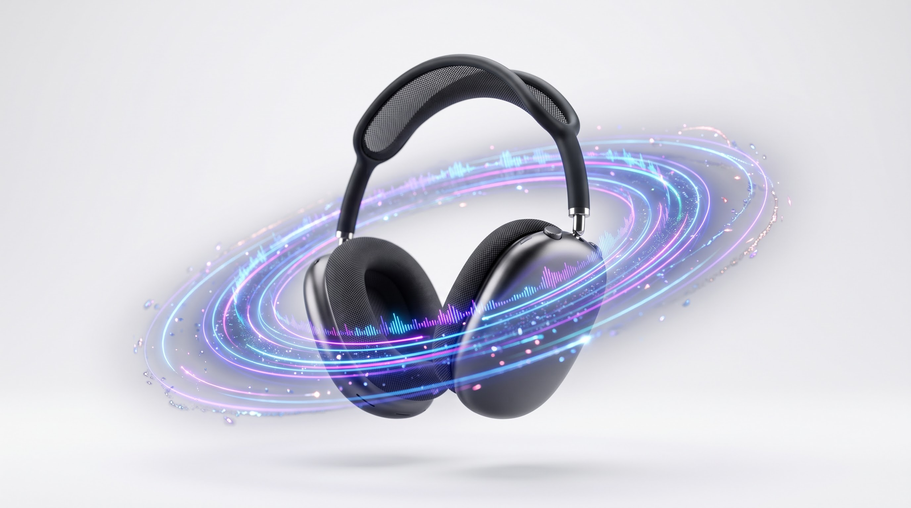
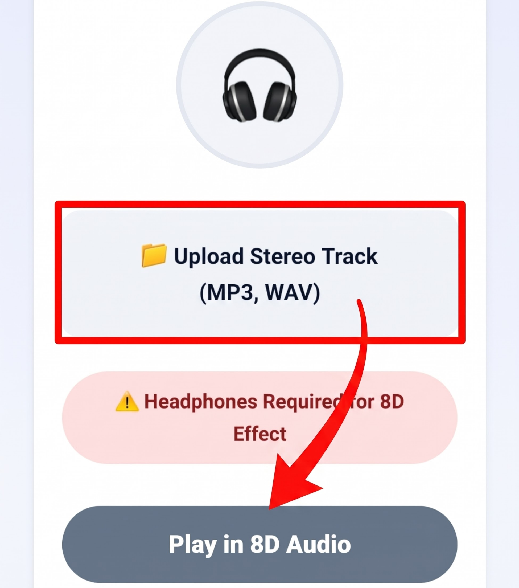

Transform standard stereo tracks into an immersive 8D surround sound experience. Put your headphones on and feel the music orbit seamlessly around your head.
🎧
⚠️ Stereo Headphones or Earbuds are strictly REQUIRED to perceive the 8D spatial effect!

The Psychoacoustic Illusion: How 8D Audio Tricks Human Spatial Perception
Despite its futuristic moniker, "8D Audio" does not operate in eight physical geometric dimensions. Instead, it refers to an advanced psychoacoustic illusion known in acoustic engineering as dynamic binaural spatialization. When listening to ordinary music tracks mixed in conventional stereo, audio is anchored between two static poles: the hard-left channel and the hard-right channel. When experienced through headphones, this static separation creates an artificial "in-head" sensation, where the soundstage feels confined directly between your ears.
In physical acoustic reality, however, the human brain determines the 3D position of an environmental sound through two vital biological mechanisms: Interaural Time Difference (ITD) and Interaural Level Difference (ILD). If a sound originates from your left side, the pressure wave arrives at your left ear roughly $0.6\text{ ms}$ earlier than it reaches your right ear (ITD), while your head acts as an acoustic shadow that absorbs high frequencies, reducing the sound's volume at the far ear (ILD). The MiMusic 8D Audio Maker replicates these spatial cues algorithmically inside your web browser using native Web Audio API digital signal processing (DSP), making it sound as if the music is physically rotating in a continuous 360-degree orbit around your head.
How LFO-Driven Stereo Panning Simulates 360-Degree Motion
To produce the sensation of a moving artist orbiting the listener, our tool deploys a continuous Low-Frequency Oscillator (LFO) hardwired directly into a high-precision StereoPannerNode. While audible music frequencies span from 20 Hz to 20,000 Hz, an LFO oscillates at an ultra-slow, sub-audible rate—specifically calibrated here at 0.12 Hz.
At 0.12 Hz, the LFO takes approximately 8.3 seconds to complete one full sinusoidal cycle from $-1.0$ (complete left ear isolation) across $0.0$ (center forehead balance) to $+1.0$ (complete right ear isolation). By continuously modulating the pan property along a smooth mathematical sine wave, the track sweeps back and forth smoothly. When combined with natural headphone frequency reflections, your auditory cortex interprets this rhythmic panning as continuous 360-degree orbital motion rather than a simple flat stereo flip.
Step-by-Step Guide: How to Turn Any Song into an 8D Track
Transforming your favorite tracks into 8D audio takes only seconds with our streamlined workspace:

Select your audio file, put on your stereo headphones, and click play to experience spatial rotation.
Step 1: Put On Stereo Headphones: This is an absolute physical necessity. 8D audio relies on isolated ear canal delivery; regular smartphone speakers or desktop monitors mix the sound waves in open air, completely canceling the spatial illusion.
Step 2: Upload Your Audio Track: Tap the dashed file picker to select any music track from your device storage. We support all common formats including MP3, WAV, AAC, and OGG files. High-energy tracks with dynamic vocals and prominent basslines yield the most dramatic spatial effects.
Step 3: Activate Spatial Playback: Click the "Play in 8D Audio" button. The Web Audio engine immediately patches the media stream through our automated LFO panner, sending the music on an effortless orbit around your head in real time.
A frequent point of confusion among listeners is why 8D audio tracks played through smartphone grilles or car sound systems sound unremarkable. When you listen to physical speakers in a room, an acoustic phenomenon known as acoustic crosstalk occurs: sound emitted by the left speaker travels across the room and enters your right ear, and vice versa. This acoustic mixing destroys the precise interaural differences required for binaural illusions.
Headphones and in-ear monitors physically isolate each audio channel directly against the ear canal, guaranteeing that the left channel enters only the left ear and the right channel enters only the right ear. Without this acoustic isolation, the brain cannot calculate simulated spatial trajectories.
Most online 8D converter services require you to upload entire MP3 files to third-party cloud servers, forcing you to wait in conversion queues before downloading heavy files. MiMusic.net executes all LFO oscillations and stereo panning entirely within your device's browser memory. Your personal audio files are never uploaded, stored, or transmitted over the internet, guaranteeing zero data usage, instantaneous playback, and total privacy.
Frequently Asked Questions
8D audio depends on strict binaural isolation. In a room, sound from a speaker reaches both ears simultaneously (acoustic crosstalk), destroying the simulated interaural time and level differences. Only headphones can deliver isolated channels directly to each ear.
No. "8D Audio" is a popular creative marketing term. Technically, the effect is 3-dimensional binaural spatial audio produced through dynamic stereo panning, subtle delay modeling, and psychoacoustic panning algorithms.
Never. All audio routing, oscillator calculations, and panning modulations execute locally in your browser memory via the Web Audio API. Your files never leave your device.
Tracks featuring distinct lead vocals, rich atmospheric synthesizer pads, and punchy rhythmic baselines provide the most striking 8D experience, as the brain easily tracks melodic leads orbiting around the listening space.